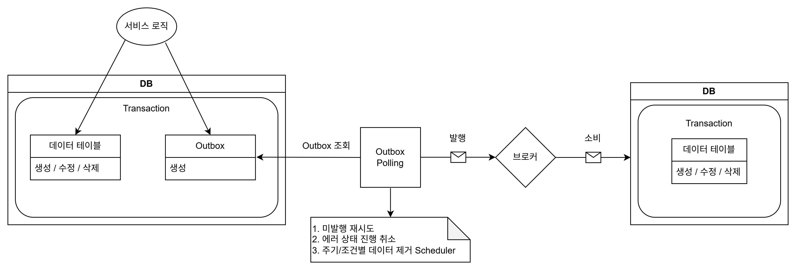

Career

김용준 1996. 04. 26
핀게이트 | 플랫폼개발팀 2026. 04 – 재직중
보험 정보 아카이브 플랫폼 백엔드 구축 2026. 07 – 진행중
[개요]
보험 정보(공지, 뉴스, 판례, Q&A, 통계, 보험사 디렉토리)를 웹/앱으로 제공하고 관리자 백오피스로 운영하는 서비스입니다.
백엔드 전체를 빈 저장소에서 시작해 설계, 구현, 배포까지 단독으로 담당했습니다.
[문제]
- 기획 문서, 백엔드 코드, 프론트 타입이 각자 관리되어 서로 어긋남
- 관리자 인증과 배포가 프로젝트 초기 상태로 정리되지 않은 상황
- 백엔드 1인 체제라 사람 리뷰어를 붙일 수 없어 리뷰 지적이 코멘트로만 남고 반영 여부가 작성자 재량에 맡겨짐
[해결 방안]
- Gateway + Application(MVC) + Admin + Common 4모듈 Gradle 골격을 초기 커밋부터 설계
- OpenAPI 스펙을 컨트롤러 코드에서 생성하고 CI 게이트로 코드↔문서 불일치를 머지 단계에서 차단
- API 버저닝 및 폐기 절차를 팀 규약으로 확정하고 Gateway에 설정으로 집행
- AI 코드리뷰를 코멘트가 아닌 CI 게이트로 운영 / 심각도를 BLOCK/WARN/INFO로 나눠 BLOCK만 머지를 차단
[문제 분석 및 해결]
FrontEnd/BackEnd 계약 드리프트 문제
- 모듈별 스펙을 단일 문서로 조립하는 CLI를 직접 제작, 스키마 이름 충돌 검출, 라우팅 프리픽스를 Gateway 설정에서 읽어 문서가 옛 주소를 가리키지 않도록 설계
- CI 게이트가 코드만 고치고 문서는 수정하지 않은 커밋의 머지를 차단하고 프론트는
openapi-typescript로 생성한 타입만 소비 - 기획 문서와 백엔드 코드가 서로 다른 저장소에서 관리되고 API 경로 표기 기준도 달라(기획
/announcements, 백엔드/application/api/v1/announcements) 계약이 실제로는 깨져도 각자 자기 문서 기준으로는 정상이므로 검증에 문제 발생- 경로 문자열은 리팩토링할 때마다 바뀌어 대조 기준으로 쓸 수 없다고 판단하여 값이 변하지 않는
operationId를 기준 키로 삼아 기획 문서와 코드의 API를 CI에서 전수 대조
- 경로 문자열은 리팩토링할 때마다 바뀌어 대조 기준으로 쓸 수 없다고 판단하여 값이 변하지 않는
헤더 위조로 다른 사용자가 되는 문제
- Gateway에서 클라이언트가 보낸 신원 헤더(
X-User-*)를 항상 제거 후 재부여하여 신원 스푸핑 차단
API 버저닝 규약 설계
- URL 메이저 버전 단일 축(
/api/v1/) 채택, 파괴적 변경이 발생한 엔드포인트 단위로만 승격 - 앱은 즉시 갱신되지 않는다는 전제에서 폐기 절차(
Deprecation/Sunset헤더 + 최소 3개월 유예)를 설계하고, 유예 시작 및 종료가 재배포 없이 설정으로 제어되도록 구현
[성과]
- API 계약이 늘어나 규모로 커져도 코드-문서 불일치가 머지 전에 차단되는 구조 확보
- 프론트엔드가 생성 타입만으로 API를 확인하여 계약 관련 커뮤니케이션 비용 제거
- DB Mapper 테스트가 Testcontainers로 DB를 직접 띄우도록 전환하고 테스트가 실패하면 머지가 막히도록 CI 조건 지정
- AI 리뷰를 머지 차단 CI 게이트(BLOCK/WARN/INFO)로 운영해 BLOCK이 하나라도 있는 경우 머지 차단
- 모듈 분리, API 버저닝, 레이트리밋처럼 중요한 판단은 검토하여 결정 사유를 기록으로 남겨 보존되도록 처리
보험설계 플랫폼(봄봄) 백엔드 개선 및 인프라 통합 2026. 04 – 2026. 07
[개요]
보험 설계사가 고객 보유 계약을 수집 및 분석하고 상품을 비교 및 설계하는 플랫폼입니다.
개인정보를 다루는 금융 도메인으로 백엔드 모듈과 프론트엔드의 유지보수를 수행하고 개선과 분산된 저장소 및 CI의 통합을 담당했습니다.
[문제 분석 및 해결]
보험사 비교 보험료 계산의 N+1 문제
- 담보 × 특약 단위 병렬 계산에서 동일 메타데이터를 매 호출마다 재조회하던 구조를 요청-로컬 메타 캐시로 요청당 1회 조회로 축소
computeIfAbsent(락을 걸고 작업) vsget + putIfAbsent(소량 중복 로드 허용) 트레이드오프를 비교하고 요청-로컬 및 단기 캐시에서는 후자가 적합하다고 판단
레거시 축약어 명명 전사 마이그레이션
- DB 컬럼, DTO, URL, Redis 키 및 프론트까지 전 계층에 관통한 레거시 축약어를 풀네임으로 전환
- 코드만 바꾸면 컴파일과 테스트는 통과하지만 런타임에서 깨지는 계약(프론트 payload 키, DB, API URL, 파일 경로)을 식별하여 마이그레이션 또는 의도적 미변경으로 각각 결정
- 암호화가 필요한 값들은 변경 전후 개수를 대조하여 검증
분산된 저장소 및 CI 통합
- 7개 저장소로 흩어진 백엔드, 프론트, 문서 자산을 단일 모노레포로 통합하고 모듈별 개별 CI 루트를 단일 파이프라인으로 일원화 (경로 룰 기반 선택적 빌드 / 러너 6종 → 2종)
- 브랜치 푸시만으로 MR 자동 생성 → AI 코드/보안 리뷰 코멘트 게시까지 자동화하여 소수 인원 팀의 리뷰 병목 해소
AI 협업 시 규약 위반이 커밋까지 살아남는 문제
- 리뷰 단계에서만 잡히던 규약 위반을 편집 시점에 차단하도록 AI 협업 가드 훅을 설계
- (도메인 간 패키지 임포트, 개인정보 컬럼 암호화 누락, Mapper와 DDL 불일치 등)
[성과]
- 보험료 계산 중복 DB 조회 제거로 비교 화면 부하 감소 9,000ms -> 6,000ms (33% 개선)
- 마이그레이션 전 단계에서 모듈 빌드 성공 및 개인정보 어노테이션 손실 0 유지
- 리뷰 미수행 머지 0건으로 AI 리뷰가 병합 전 CRITICAL 결함 차단
- 도메인 경계 위반과 암호화 누락이 커밋 이전 단계에서 차단되어 리뷰 부하 감소
사내 AI 개발 플랫폼 플러그인 개발 2026. 06 – 진행중
[개요]
전사 개발 조직이 공유하는 AI 협업 도구 마켓플레이스에 플러그인을 개발했습니다.
프로젝트마다 손으로 반복하던 초기 세팅과 문서-코드 정합 검증을 도구로 규격화했습니다.
[주요 작업]
- 백엔드 스캐폴드 플러그인 신설 : Java, Spring Boot을 기준으로 버전을 선택하여 관리하고 Boot버전 3 → 4 이행 차이(웹 스타터 개편, Jackson 3, 패키지 이동)를 템플릿 토큰으로 흡수
- 신규 백엔드 프로젝트 초기 세팅을 대화형 질문으로 처리할 수 있도록 설계
- 스캐폴드 템플릿의 취약점 발견 및 차단 : Gateway 인증 필터가 클라이언트 발신
X-User-Id헤더를 제거하지 않아 헤더 위조만으로 임의 사용자 인증 우회가 가능한 구조를 분석 후 발견 - 헤더 강제 제거와 템플릿 결함이라 파생 프로젝트 전체로 복제될 취약점을 확산 전에 차단
- 기획 문서 색인용 개발 문서 생성 : 기획 정본 전문을 매번 읽어야 하던 구조를 절 번호 기반 색인으로 대체하여 필요한 문항만 탐색하도록 전환하고 탐색 성능 향상과 토큰 사용량 절감을 동시에 확보
- 기획 정본 ↔ 개발 문서 정합 검증 엔진 개발 : 검사 10종과 회귀 테스트 97건으로 수행하지 않은 검사와 통과한 검사를 구분해 보고하도록 하고 보고만 하던 drift 검사를 CI 차단 게이트로 승격
마이크로프로텍트 | IT본부 2024. 08 – 2025. 10
발급매니저 앱 서비스 2025. 06 – 2025. 10
[개요]
대리인이 위임장을 통해 병원 서류를 대신 발급받고 서류를 앱으로 업로드하여 보험 청구를 진행할 수 있는 기능을 설계 및 구현했습니다.
기존 모놀리식 구조에서 기능 장애가 전체 서비스로 확산되는 문제를 해결하기 위해 Strangler 패턴을 적용하여 청구 도메인을 점진적으로 분리했습니다.
Kafka 기반 이벤트 드리븐 아키텍처를 도입하고 Outbox 패턴을 적용하여 데이터 원자성과 서비스 간 결합도를 개선했습니다.
[문제]
- 모놀리식 구조로 인해 특정 기능 장애가 전체 서비스로 확산
- 일부 기능 수정 시 전체 서비스 배포 필요 → 배포 리스크 증가
- 동기 호출 구조로 인해 서비스 간 결합도가 높고 확장성 제한
[해결 방안]
- Strangler 패턴을 적용하여 청구 도메인을 점진적으로 분리
- Kafka 기반 이벤트 드리븐 아키텍처 도입으로 비동기 통신 구조 전환
- 이벤트 발행의 원자성 보장을 위해 Outbox 패턴 적용
- 폴링 기반 이벤트 발행 구조를 설계하여 애플리케이션 레벨에서 제어 가능하도록 구성
[문제 분석 및 해결]
이벤트 발행의 원자성 문제
- DB 트랜잭션과 Kafka 전송이 분리되어 데이터 불일치 발생
- Outbox 테이블을 도입하여 서비스 로직과 이벤트 데이터를 하나의 트랜잭션으로 처리하고, Outbox를 기반으로 이벤트를 발행하여 데이터 일관성 확보
이벤트 발행 방식으로 Polling 선택
- CDC(Debezium) 방식은 WAL 레벨 변경 및 리플리케이션 슬롯 등 DB 설정과 운영 리스크가 있다고 판단하여 추후 도입 고려
- 초기 단계에서는 안정성과 제어 가능성을 우선하여 Polling 방식 선택, 애플리케이션 레벨에서 제어 및 장애 대응이 용이하고 환급 서비스는 실시간성보다 안정성이 중요하다고 판단
분산 환경에서 중복 및 순서 문제
- 다수 인스턴스에서 폴링 시 이벤트 중복 발행이 가능하여 파티션 키 기반 순서 보장 어려움
FOR UPDATE SKIP LOCKED를 활용하여 중복 처리 방지와 병렬 처리를 동시에 확보- 파티션 키 기준으로 이벤트를 조회하여 동일 키는 하나의 인스턴스에서 순차 처리하도록 설계
단건 발행으로 인한 성능 문제
- 개별 이벤트 순차 발행으로 파티션 키 하나당 최대 약 3,600건 발행에 약 12,000ms 소요 (네트워크 왕복 누적)
- 최대 500건 단위 batch 처리 + Jsonb 컬럼 저장 + lz4 압축으로 개선
[성과]
- 배당 1건당 약 3,600건의 이벤트를 12,000ms → 800ms로 처리 (약 93% 개선)
- 서비스 장애가 전체 시스템으로 확산되지 않도록 구조 개선
- 기능 단위 배포가 가능해져 배포 리스크 감소
- 트래픽이 집중되는 청구 도메인을 독립적으로 점진 확장 가능하도록 구조 개선
[구조]

보험 상담 보장 분석 자동화 2025. 04 – 2025. 05
[개요]
보험 보장 분석 웹에 분산된 데이터를 상담원이 직접 조회해야 하는 비효율 문제를 해결하기 위해
스크래핑 기반 데이터 수집 및 백오피스 조회 기능을 설계 및 구현했습니다.
[문제]
- 외부 보장 분석 웹에서 API 미제공 및 네트워크 분석 불가로 인해 데이터 자동 수집 불가능
- 상담원이 직접 웹에 접속하여 정보를 확인해야 하는 비효율적인 업무 구조 존재
[해결 방안]
- Kotlin + Selenium(headless) 기반 스크래핑 서버 구축으로 데이터 자동 수집
- 수집 데이터를 DB에 저장하여 백오피스에서 즉시 조회 가능하도록 기능 개발
- Firefox + GeckoDriver 조합을 선택하여 ChromeDriver 대비 버전 호환성 문제 최소화 및 운영 안정성 확보
[문제 분석 및 해결]
스크래핑 시 페이지 로딩 과정의 메모리 스파이크로 Out Of Memory 발생
- 서버 스펙 업그레이드 대신 SWAP 2GiB 적용으로 비용 증가 없이 문제 해결
- t4g.small 환경을 유지하면서 안정적으로 스크래핑 처리 가능하도록 개선
AJAX 로딩 및 SPA 특성으로 인한 DOM 지연 렌더링 문제
- 렌더링 완료를 기다리기 위해
Thread.sleep고정 대기를 사용하여 렌더링이 먼저 끝나도 남은 시간을 그대로 낭비하는 구조 - WebDriverWait 기반 명시적 대기로 전환하여 요소가 준비되는 즉시 다음 단계로 진행하도록 변경하고 예외 처리 로직 함께 구성
- 재시도 로직을 구현하여 데이터 누락 없이 안정적인 수집 구조 구축
[성과]
- 스크래핑 처리 시간 10,000ms → 7,000ms (30% 개선)
- 상담원의 수동 조회 과정 제거로 업무 효율성 개선
- 외부 의존적인 데이터 조회 구조를 내부 시스템으로 전환하여 운영 안정성 확보
- 추가 인프라 비용 없이 메모리 문제 해결
기타 수행 프로젝트 : 보험금 Q&A 서비스(형태소 분석 기반 키워드 랭킹, Redis 집계로 DB Write I/O 95% 감소), 지역별 대리인 관리 및 통계(단일 거대 쿼리 분리로 3,000ms → 800ms 개선), 회원별 통계 처리, Java 기반 레거시 서비스 이전, PostgreSQL 쿼리 튜닝 및 장애 대응
웰그램 | 데이터개발팀 2020. 10 – 2023. 09
보험 상품 데이터 수집 및 처리 파이프라인 구축 2020. 11 – 2023. 07
[개요]
40여 개 보험사의 다이렉트 및 대면 상품 데이터를 수집하고, 보험 비교 서비스에서 활용할 수 있도록 데이터 처리 파이프라인을 설계 및 구현했습니다.
하루 평균 10만 건 이상의 데이터를 처리하는 환경에서 안정적인 수집과 정합성을 확보하고
반복적인 스크래핑 로직을 공통화하여 유지보수성을 개선했으며 데이터 변경 이력을 관리하는 아카이빙 구조를 도입했습니다.
[문제]
- 데이터 수집 환경에서 에러 발생 시 원인 파악 어려움 (서버 내 로그 파일 직접 확인 필요)
- 스크래핑 로직이 보험사별로 분산되어 코드 중복 및 유지보수성 저하
- API 호출 누락, 중복 호출, 예외 미처리 등 비정상 케이스 발생
- 보험 상품 개정 여부를 수동으로 확인하여 누락 및 불필요 작업 발생
- 데이터 변경 이력을 관리할 수 없어 정합성 검증 어려움
[해결 방안]
- ErrorCode 기반 에러 로깅 구조를 설계하여 주요 예외를 선별 저장하여 백오피스에서 실시간 모니터링
- 스크래핑 종료 후 API 호출 구간 및 반복 로직(클릭, 스크롤, 대기)을 공통 모듈로 분리
- 아카이빙 테이블을 도입하여 기존 데이터를 이력으로 저장하고 작업 테이블과 비교하여 변경 사항을 자동 감지
[문제 분석 및 해결]
데이터 수집 환경에서의 에러 추적 문제
- 하루 평균 10만 건 이상의 데이터 처리 중 에러 발생 시 로그 파일 기반으로는 원인 파악이 어려움
- ErrorCode Enum을 정의하여 주요 에러 발생 구간에 구조화된 로그를 저장
- 이를 통해 백오피스에서 실시간으로 에러 현황을 확인할 수 있도록 개선하고 대응 시간 단축
중복 코드 및 유지보수성 저하 문제
- 보험사별로 개별 구현된 로직으로 인해 코드 중복 및 품질 편차 발생
- 스크래핑 종료 후 데이터 저장 API 호출 구간을 공통화하여 호출 누락 및 중복 문제 방지
- 클릭, 스크롤, 대기 처리 등 반복 동작을 공통 컴포넌트로 분리하여 재사용 구조로 개선
- 페이지 구조 변경 시 공통 모듈을 사용해 코드 수정을 최소화하여 유지보수 비용 감소 및 작업 효율 향상
데이터 변경 감지 및 이력 관리 문제
- 보험 상품 개정 여부를 수동으로 확인하여 누락 및 불필요한 재처리 발생
- 아카이빙 테이블을 도입하여 기존 데이터를 이력으로 저장하고 최신 데이터로 갱신
- 작업 테이블과 아카이빙 데이터를 비교하여 변경 여부를 자동으로 식별하도록 구현
[성과]
- 하루 평균 10만 건 이상의 데이터 수집 및 처리 파이프라인 안정화
- 백오피스 실시간 에러 모니터링으로 에러 대응 시간 단축
- 공통 모듈화로 페이지 리뉴얼 시 수정 범위 최소화, 유지보수 비용 절감 및 작업 효율 개선
- 데이터 변경 감지 자동화로 개정 상품 누락 및 불필요 재작업 제거
스크래핑 API 성능 개선 2022. 01 – 2022. 10
[개요]
백오피스와 사용자 서비스가 공통으로 사용하던 데이터 조회 구조를 분리하고 비효율 쿼리를 개선하여
API 응답 속도와 데이터 처리 성능을 향상시켰습니다.
[문제]
- 백오피스와 사용자 서비스가 동일 쿼리를 사용하여 불필요한 데이터까지 조회
- 비효율적인 JOIN, 서브쿼리, 와일드카드로 인한 성능 저하와 레거시 쿼리 누적
- 동시 접근 시 테이블 락 경합으로 인한 성능 저하 및 데이터 충돌
[해결 방안 및 성과]
- 조회 목적별 쿼리 분리로 불필요 데이터 조회 제거
- 보험료 조회 쿼리 분리 및 인덱스 활용 : 3,700ms → 170ms (약 95% 개선) 보험료 테이블을 JOIN으로 한 번에 조회하던 구조를 분리하고, FK 인덱스를 타도록 변경
- UNION ALL 제거 및 조회 구조 단순화 : 2,000ms → 1,200ms 상품 종류 조회에서 여러 테이블을 UNION ALL로 합치던 쿼리를 필요한 테이블만 직접 조회하도록 분할
- 서브쿼리를 JOIN으로 변경 : 1,300ms → 900ms SELECT 절에서 행마다 반복 실행되던 서브쿼리를 JOIN 한 번으로 대체
- DISTINCT 제거 : 1,500ms → 400ms 중복 방지 목적으로 관행적으로 붙어 있던 DISTINCT를 중복이 발생하지 않는 구간에서 제거해 정렬 비용 제거
- SELECT 컬럼 최소화(약 20개 제거)로 불필요 I/O 감소
updated_at기반 낙관적 락으로 충돌을 감지하고 특정 케이스(스크래핑 할당)에 한해 비관적 락 적용하여 데이터 정합성 확보
기타 수행 프로젝트 : 사내 상품 관리 시스템 개발(노션 수기 관리를 백오피스로 이전하는 TF 제안 및 주도, 평균 작업 시간 60분 → 20분), 사용자 성향 보험 추천 개발(페이지 체류 시간 증가)
기술 스택
- 언어 & 프레임워크
- Java, Kotlin, Spring Boot, Spring Cloud Gateway, MyBatis, Exposed, Jooq, JPA
- DB & 메시징 & 캐시
- PostgreSQL, MySQL, Kafka, Redis
- DevOps & 버전 관리
- AWS(EC2, ECS, RDS, S3, MSK, Parameter Store), Docker, GitLab CI, Git
- Others
- Selenium(Firefox, Chrome), Claude Code, Notion, Jira, Slack